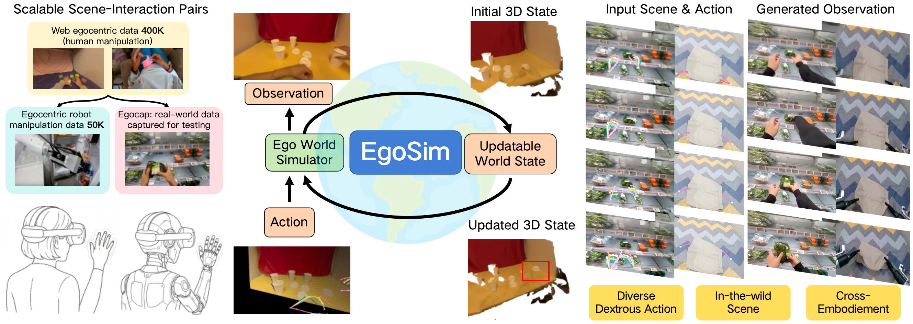

Given a scene image and a sequence of actions, EgoSim generates temporally and spatially consistent egocentric observations and high-quality dexterous interactions. EgoSim also persistently updates the 3D scene state for continuous simulation. We propose a data construction pipeline to leverage web-scale egocentric video data, and thus strengthen the generalization ability of EgoSim with scalable scene-interaction pairs. EgoSim also exhibits strong few-shot adaptation capability to real-world scenarios and diverse robotic embodiments.
We introduce EgoSim, a closed-loop egocentric world simulator that generates spatially consistent interaction videos and persistently updates the underlying 3D scene state for continuous simulation. Existing egocentric simulators either lack explicit 3D grounding, causing structural drift under viewpoint changes, or treat the scene as static, failing to update world states across multi-stage interactions. EgoSim addresses both limitations by modeling 3D scenes as updatable world states. We generate embodiment interactions via a Geometry-action-aware Observation Simulation model, with spatial consistency from an Interaction-aware State Updating module. To overcome the critical data bottleneck posed by the difficulty in acquiring densely aligned scene–interaction training pairs, we design a scalable pipeline that extracts static point clouds, camera trajectories, and embodiment actions from in-the-wild large-scale monocular egocentric videos. We further introduce EgoCap, a capture system that enables low-cost real-world data collection with uncalibrated smartphones. Extensive experiments demonstrate that EgoSim significantly outperforms existing methods in terms of visual quality, spatial consistency, and generalization to complex scenes and in-the-wild dexterous interactions, while supporting cross-embodiment transfer to robotic manipulation.
Compare our method with various baselines on EgoDex and EgoVid datasets. Use arrows to switch scenes and buttons to select baseline methods.
Results of our method on real-world scenes captured by the EgoCap system.
Ablation study on the effect of hand data pretraining.
@article{hao2026egosim,
title={EgoSim: Egocentric World Simulator for Embodied Interaction Generation},
author={Hao, Jinkun and Jia, Mingda and Wang, Ruiyan and Liu, Xihui and Yi, Ran and Ma, Lizhuang and Pang, Jiangmiao and Xu Xudong},
journal={arXiv preprint arXiv:2604.01001},
year={2026}
}